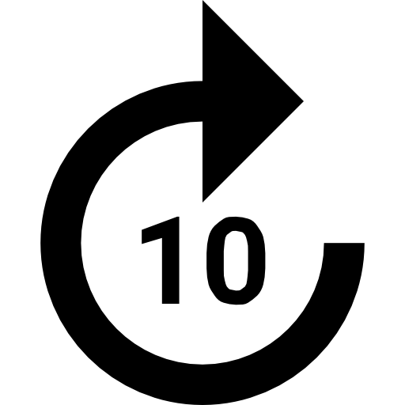
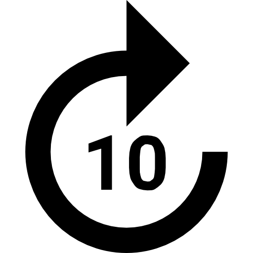

UPCOMING Football Matches and Best Team that have the highest Chances of winning - Honey Pie
Watch the Lates Match Highlights On the Bottom of the Page
Match Highlights are taken from SONY LIV CHANNEL
Football, often referred to as "the beautiful game," captivates millions of fans worldwide.
Its unmatched drama, skill, and intensity create a bond that unites people from diverse backgrounds.
This January promises excitement, with high-stakes matches across leagues, cups, and European competitions.
Premier League Excitement
The Premier League title race is heating up, featuring top teams battling for supremacy.
Arsenal, with their dynamic young talent Bukayo Saka, kicks off against Brentford on January 1.
Manchester City, driven by Erling Haaland's goal-scoring feats, aims to close the gap.
Liverpool, led by Mohamed Salah, has key matches against Manchester United and Brighton.
Other key fixtures include:
- January 4: Tottenham vs. Newcastle
- January 5: Liverpool vs. Manchester United
- January 18: Arsenal vs. Aston Villa
- January 20: Brighton vs. Manchester United
- January 22: Chelsea vs. Manchester City
- January 25: Leeds United vs. Leicester City
- January 30: Everton vs. Southampton
European Competition Highlights
January also marks pivotal moments in the Champions League and Europa League campaigns.
Arsenal faces Dinamo Zagreb, while Manchester City takes on Paris Saint-Germain in marquee clashes.
Aston Villa travels to Monaco, a test of their European ambitions.
Tottenham and Manchester United aim to progress in the Europa League with tough fixtures against Hoffenheim and Rangers.
FA Cup Magic
The FA Cup third round, set from January 10 to 13, is another highlight.
Premier League teams enter the fray, with underdogs like Accrington Stanley dreaming of giant-killings.
Arsenal faces Manchester United, a match destined to be a thriller.
Other Global Leagues
Beyond England, football enthusiasts can look forward to exciting clashes worldwide:
- La Liga: Barcelona vs. Villarreal and Real Madrid vs. Valencia.
- Serie A: Inter Milan vs. Napoli, Juventus vs. Roma.
- Bundesliga: Bayern Munich and Borussia Dortmund continue their title races.
- MLS: LA Galaxy vs. New York City FC.
- Ligue 1: Paris Saint-Germain vs. Lyon.
Players to Watch
The spotlight shines on top players who can decide matches with moments of brilliance:
- Erling Haaland (Manchester City): A relentless goal machine driving his team forward.
- Bukayo Saka (Arsenal): Arsenal's creative force, key to their title push.
- Jude Bellingham (Real Madrid): A midfield dynamo dominating La Liga.
- Victor Osimhen (Napoli): A critical figure in Napoli’s Serie A ambitions.
- Mohamed Salah (Liverpool): The Egyptian King is always a danger in front of goal.
- Kylian Mbappé (Paris Saint-Germain): The pace and skill of Mbappé make him one of the top forwards in the world.
- Harry Kane (Tottenham Hotspur): A natural-born goal scorer who is always a key figure in his team’s attack.
Transfer Market Drama
January’s transfer window adds intrigue, as clubs seek reinforcements to bolster their squads.
Fans eagerly watch for big moves that can change the course of the season.
From dramatic league fixtures to FA Cup surprises and European showdowns, this month is packed with unmissable action.
Fans worldwide are gearing up for thrilling football moments that inspire and unite the community.
The beautiful game, with its unpredictability, ensures that January will be unforgettable.
Premier League Fixtures (Continued)
In addition to the early January fixtures, more thrilling matches await. The race for the Premier League title intensifies as teams fight for every point.
- February 2: Arsenal vs. Manchester United
- February 3: Chelsea vs. Leicester City
- February 4: Southampton vs. Liverpool
- February 5: Manchester City vs. Newcastle
La Liga & Serie A Highlights
As Europe’s top football leagues continue to showcase their talents, La Liga and Serie A will have thrilling matches:
- La Liga: Real Madrid vs. Atlético Madrid
- Serie A: Juventus vs. Napoli
- Serie A: Milan vs. Roma
Bundesliga
The Bundesliga’s race for the top spot continues, with Bayern Munich facing stiff competition from Borussia Dortmund:
- January 13: Bayern Munich vs. Hoffenheim
- January 16: Borussia Dortmund vs. Bayer Leverkusen
MLS 2025 Season Preview
With the new MLS season starting soon, excitement is building among American football fans.
- LA Galaxy vs. Chicago Fire
- New York Red Bulls vs. Atlanta United
Top Goalscorers of 2024
As the year comes to a close, we take a look at the top goal-scorers from 2024:
- Erling Haaland (Manchester City) - 40 goals
- Mohamed Salah (Liverpool) - 32 goals
- Harry Kane (Tottenham Hotspur) - 30 goals
2025 Champions League Groups
As Europe’s premier competition heats up, let’s preview some of the group stage matchups:
- Group A: Manchester City, Barcelona, Paris Saint-Germain
- Group B: Bayern Munich, Real Madrid, Inter Milan
Club Rivalries
Football is rich in historic rivalries that date back decades. The fierce competition between teams like Manchester United and Liverpool adds drama to every match.
- Manchester United vs. Liverpool: An iconic rivalry with unforgettable moments.
- El Clasico: Barcelona vs. Real Madrid.
- North London Derby: Arsenal vs. Tottenham Hotspur.
Future of Football
What does the future hold for football? Let’s discuss the rise of artificial intelligence, player fitness, and how technology is shaping the game.
- AI refereeing: Will VAR be replaced by AI-assisted technology?
- Player health monitoring: The impact of technology on performance.
- Fan experience: The future of augmented reality in football stadiums.
Football Tournaments Around the World
Other major football tournaments around the world offer great moments.
- AFCON (Africa Cup of Nations): Top African teams compete for glory.
- Copa America: South America's premier football tournament.